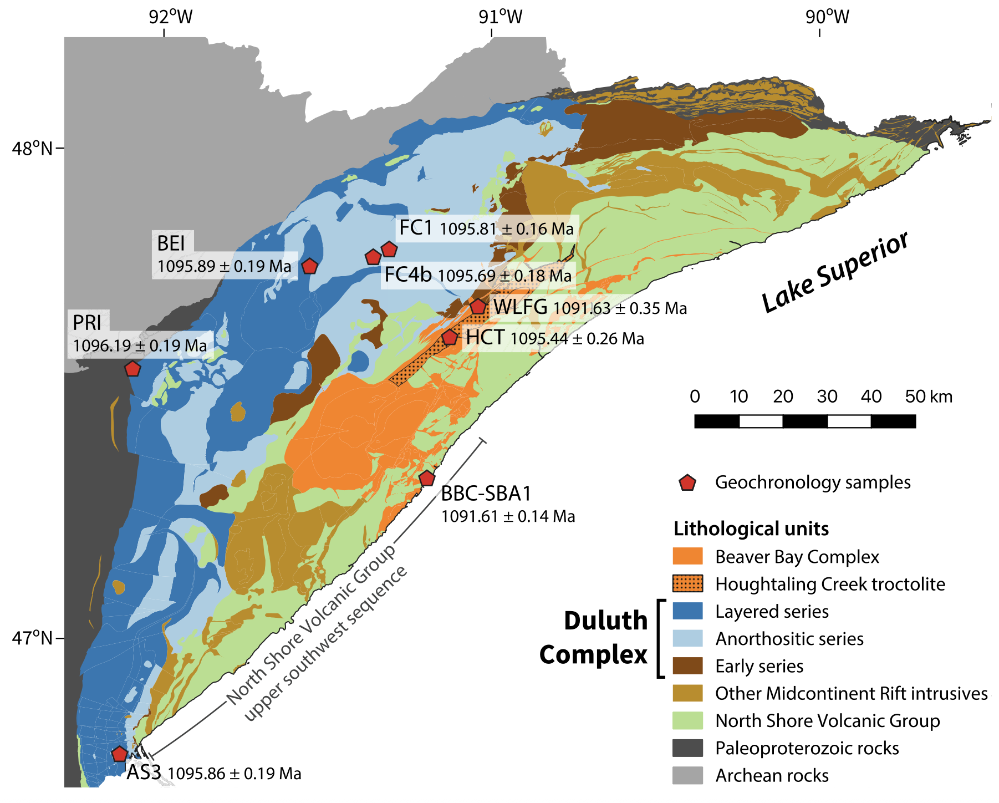
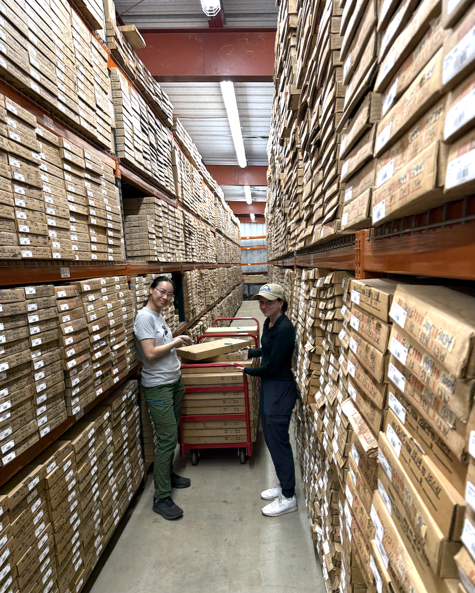
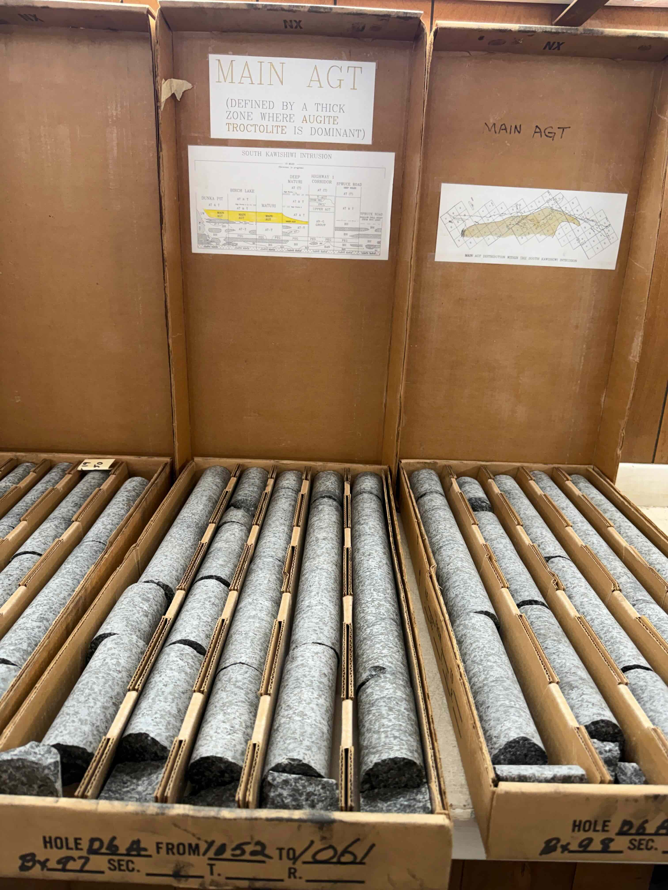
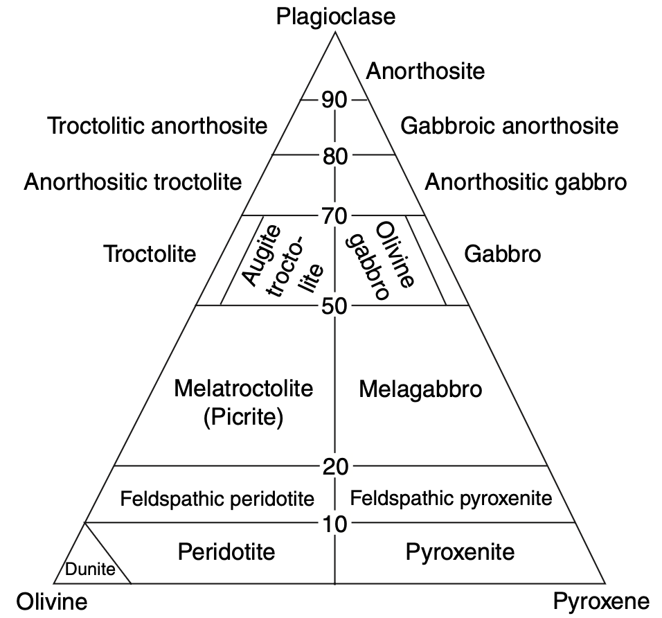
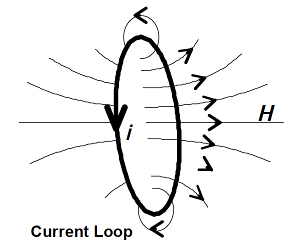
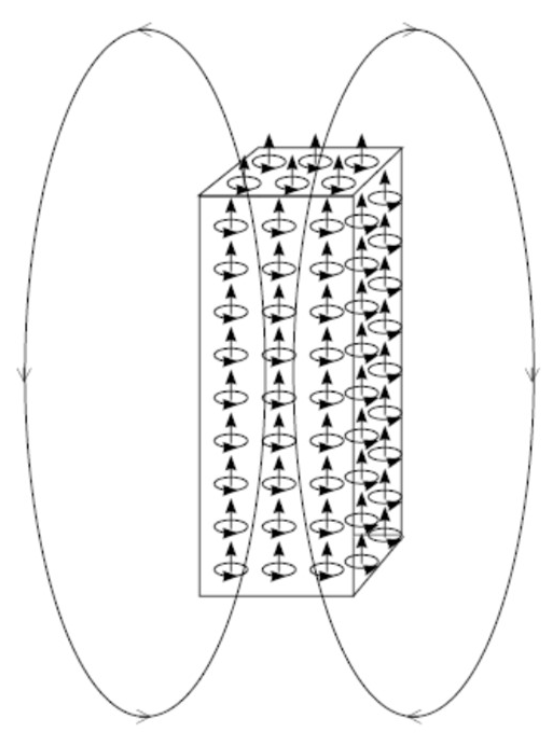
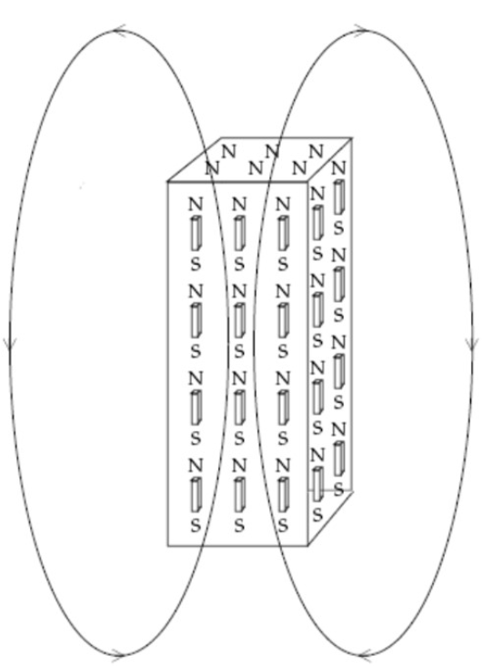
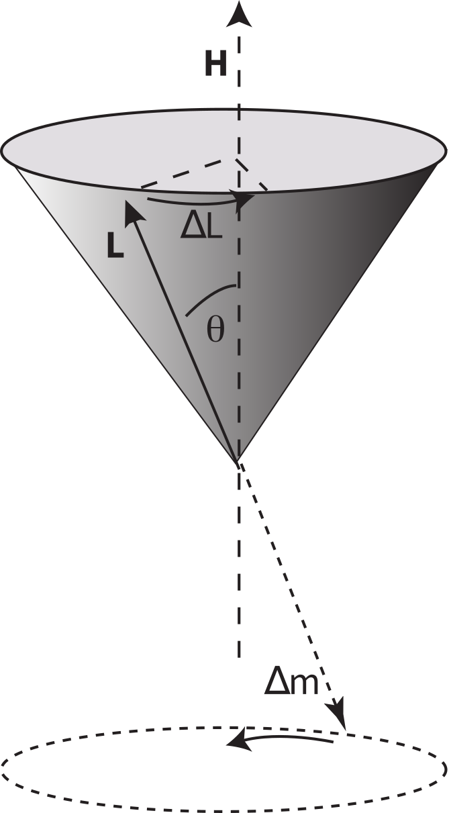
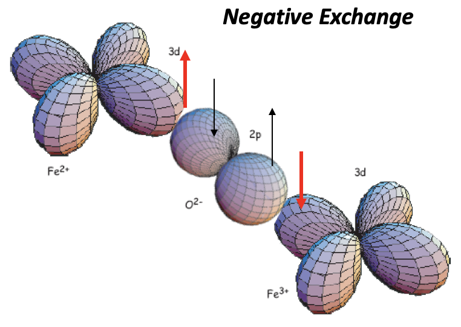
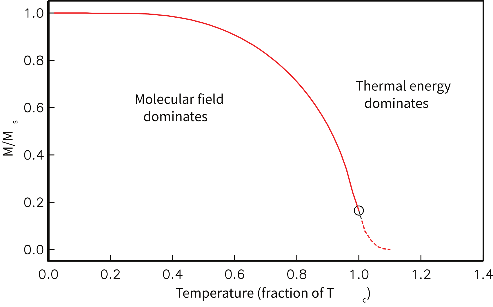

…and to diamagnetism, paramagnetism, and ferromagnetism
2026 IRM Summer School of Rock Magnetism
Institute for Rock Magnetism · University of Minnesota
Nick Swanson-Hysell
Our group: swanson-hysell.esci.umn.edu · github.com/Swanson-Hysell-Group
Part 1




| Group | Unit(s) | Interval (ft) | Samples |
|---|---|---|---|
| 1 — Main Augite Troctolite | MAIN AGT | 124–1297 | 34 |
| 2 — Ultramafic | U1; U3 | 1297–1463; 1817–1872 | 18 |
| 3 — BAN | BAN (u); BAN (l) | 1725–1817; 1872–2050 | 11 |
| 4 — Heterogeneous | BH (u); BH | 1463–1605; 1695–1725 | 12 |
| 5 — Felsic | GRAN + granophyre | 2050–2125 + xenoliths | 9 |
Each group rotates through all five instrument stations (VSM · MPMS · RAPID SRM · Kappabridges · QDM) through the Summer School.
The comparison across units is a major focus: magnetic mineralogy, domain state, and remanence behavior of each unit, assembled into a picture of the whole intrusion.
Part 2
\(\mathbf{B}\) is what interacts with the physical world — it exerts the Lorentz force and induces voltages. A magnetometer senses the flux or field produced by a rock and reports its magnetic moment; dividing by volume or mass gives magnetization.
Geomagnetic fields are weak: we quote \(\mathbf{B}\) in μT (Earth's surface field ≈ 25–65 μT) and nT.

Field at the center of a loop of radius \(r\) carrying current \(i\):
The loop has a magnetic moment:
Sum the atomic dipole moments in a volume, divide by that volume — a vector density.
A uniformly magnetized body can be described equivalently as:
For a given magnetization the two descriptions are mathematically equivalent — they produce the same field. The loop picture is the physical one (electron currents), the pole picture is often the easier one to compute with.


A measured moment \(m\ \mathrm{[A\,m^2]}\) scales with how much material is in the instrument. To compare specimens we normalize:
You will deal with both conventions this week: every instrument fundamentally measures a moment-related signal, but Kappabridge susceptibilities are typically reported volume-normalized (dimensionless SI) while VSM and MPMS magnetizations are typically mass-normalized (A m²/kg). Converting between them just takes the density.
A rock in Earth's field can carry both at once — their ratio in the ambient geomagnetic field is the Koenigsberger ratio \(Q = M_{rem}/M_{ind} = M_{rem}/\kappa H\), the quantity your project will pin down for each Duluth Complex unit, informing future aeromagnetic interpretation.
\(\mathbf{B}\) and \(\mathbf{H}\) or \(\mathbf{M}\) have different units and dimensions, and in SI \(\mu_0 \approx 4\pi \times 10^{-7}\ \mathrm{T\,m\,A^{-1}}\)
| Parameter | Symbol | SI unit | cgs unit | Conversion |
|---|---|---|---|---|
| B = μ0(H + M) | B = (H + 4πM) | |||
| Magnetic moment | m, μ | A m² | emu | 1 A m² = 10³ emu |
| Magnetization (volume) | M, J | A/m | emu/cm³ | 1 A/m = 10⁻³ emu/cm³ |
| Magnetization (mass) | σ | A m²/kg | emu/g | 1 A m²/kg = 1 emu/g |
| Magnetic field | H | A/m | oersted (Oe) | 1 A/m = 4π × 10⁻³ Oe |
| Magnetic induction | B | tesla (T) | gauss (G) | 1 T = 10⁴ G |
| Susceptibility (M/H) | κ (volume)* | dimensionless | emu/(cm³ Oe) | 1 (SI) = 1/4π emu/(cm³ Oe) |
| χ (mass) | m³/kg | emu/(g Oe) | 1 m³/kg = 10³/4π emu/(g Oe) |
*Even though κ is dimensionless, it is common to attach "SI" to the value to avoid confusion.
Much of the primary magnetism literature (pre-1990 and outside geomagnetism and paleomagnetism) is still written using cgs units.
Part 3
Place a material in a field \(\mathbf{H}\); it develops a magnetization \(\mathbf{M}\). For most geological materials in weak fields the response is linear:
κ < 0, small (~ −10⁻⁵)
Induced magnetization opposes the field. All matter does this.
Quartz, calcite, plagioclase, water
κ > 0, small (10⁻⁵–10⁻³)
Unpaired spins partially align with the field; thermal energy randomizes.
Olivine, pyroxene, amphibole, biotite
κ ≫ 0, huge (up to ~10⁰–10¹)
Exchange coupling orders spins collectively → spontaneous magnetization + memory.
Magnetite, hematite, pyrrhotite
Ferromagnetic minerals are so strong that trace amounts of magnetite dominate the bulk susceptibility of a rock — which is why susceptibility can work as a proxy for magnetic mineral concentration.
The D-6A along-core profile spans this entire range — from the nearly diamagnetic granophyre to the Fe-Ti oxide-rich U3 pods.
every atom does it — weakly, and backwards

Quartz, calcite, feldspar → clean sandstones and limestones can have net negative susceptibility. κ ~ −10⁻⁶ to −10⁻⁵ (SI).
Drag the field slider (or cycle it): induced moments grow with the field and always oppose it, so the M–B line has a negative slope. When B returns to zero, M returns to zero — no memory. (The slider reports the applied field as \(B = \mu_0 H\); the susceptibility relation remains \(M = \kappa H\).)
permanent moments vs. thermal chaos
Magnetic energy — the field pulls each moment into alignment:
Thermal energy — randomizes the moments:
Example: one high-spin Fe²⁺ ion, as in fayalite, Fe₂SiO₄ (\(\mu \approx 5\mu_B\))
| B, T | \(\mu B\) | \(k_B T\) | \(\mu B / k_B T\) | |
|---|---|---|---|---|
| B = 0.01 T, T = 300 K | 4.6 × 10⁻²⁵ J | 4.1 × 10⁻²¹ J | 10⁻⁴ | \(\mu B \ll k_B T\) — weak alignment |
| B = 10 T, T = 10 K | 4.6 × 10⁻²² J | 1.4 × 10⁻²² J | 3 | \(\mu B > k_B T\) — strong alignment |
thermal energy competes with alignment
The Curie constant \(C \propto N\mu_{\mathrm{eff}}^2\) encodes how many moments and how strong — in rocks it largely tracks the abundance of Fe-bearing ions.
| Mineral | Composition | κ (SI) | Class |
|---|---|---|---|
| Forsterite | Mg₂SiO₄ | −1.2 × 10⁻⁵ | diamagnetic |
| Typical olivine | (Mg,Fe)₂SiO₄ | ≈ 1.6 × 10⁻³ | paramagnetic |
| Fayalite | Fe₂SiO₄ | ≈ 5.5 × 10⁻³ | paramagnetic |
Representative room-temperature values — susceptibility varies with composition (Fe/Mg), crystallographic orientation, and any ferromagnetic inclusions.
Your troctolites are plagioclase (diamagnetic) + olivine (paramagnetic) + augite (paramagnetic) — the matrix of every rock in D-6A is a dia/para mixture (with a nice dash of ferromagnetism thrown in too!).
Permanent moments jitter thermally and lean into the field — positive slope, ~100× steeper than the diamagnetic response. Raise T and watch the moments get wilder and κ fall (Curie's law). Still a line through the origin: no remanence, no coercivity, no memory.
Caveats: the alignment is greatly exaggerated for visibility (even at the slider extremes of 1 T and 100 K, μB/kBT ≈ 0.03, so a faithful drawing would look nearly random); the jitter is a schematic wobble, not Boltzmann statistics, such that the plotted M follows the Curie law with the arrows illustrating the mechanism but not being summed for the result.
exchange coupling changes everything — and gives rocks memory
This antiparallel coupling is the basis for both antiferromagnetism and ferrimagnetism — the orderings that matter most in Earth materials.

Ferrimagnetism = antiparallel alignment + unequal moments.
A strong enough field drives M to its high-field limit. ∝ concentration of ferromagnetic minerals.
Remove the field and magnetization stays. This is why rocks record paleomagnetism.
Reverse field needed to drive M back to zero — resistance to field-driven remagnetization, a key ingredient of remanence stability (along with grain size, domain state, and temperature).
Stoner–Wohlfarth physics: uniaxial single-domain magnetite grains with randomly oriented easy axes (shape anisotropy of prolate grains, BK = μ₀(Nb−Na)Ms). Each moment rides its energy minimum — rotating reversibly toward B, flipping irreversibly when the minimum vanishes. The loop is computed from these same grains: Mr and Bc are emergent, not dialed in.

Magnetite is ~230× stronger than hematite (Ms 92 vs 0.4 Am²/kg). Slide the magnetite fraction: in this two-component model, near ~0.5 wt% the two phases contribute comparably and the loop goes wasp-waisted — a pinched loop is a classic sign of mixed soft + hard coercivity. Coercivity spectra and unmixing will be covered later on in the summer school.
| Group | Project | Participants |
|---|---|---|
| 1 | Main Augite Troctolite | Alexis, Gabriel, Gianna, Oscar |
| 2 | Ultramafic (U1 and U3) | Allison, Margaret, Ricardo, Roshini |
| 3 | BAN (Basal Augite Troctolite and Norite) | Ana, Lily, Paige, Taizo |
| 4 | Heterogeneous (basal heterogeneous zone) | Ellen, Nay, Rachel, Yogaraj |
| 5 | Felsic (Giants Range Batholith + granophyre) | Julia, Nicole, Peter, Tolulope |
| Station | Measurement | Connects to |
|---|---|---|
| Lake Shore VSM | Hysteresis loops, Ms, Mr, Bc, high-field slope | today's loops — for real |
| MPMS | Low-temperature remanence, Verwey & Besnus transitions, FC/ZFC | fingerprinting magnetite & pyrrhotite |
| Kappabridges | Susceptibility vs. temperature & frequency, AMS | κ, Curie temperatures, fabrics |
| RAPID SRM | NRM + AF/thermal demagnetization | remanence, Koenigsberger ratios |
| QDM | Magnetic microscopy | which grains carry the signal |
| Day | Group 1 | Group 2 | Group 3 | Group 4 | Group 5 |
|---|---|---|---|---|---|
| Mon 7/20 | Lake Shore VSM | MPMS | RAPID SRM | Kappabridges | QDM |
| Tue 7/21 | MPMS | RAPID SRM | Kappabridges | QDM | Lake Shore VSM |
| Wed 7/22 | RAPID SRM | Kappabridges | QDM | Lake Shore VSM | MPMS |
| Thu 7/23 | Kappabridges | QDM | Lake Shore VSM | MPMS | RAPID SRM |
| Fri 7/24 | QDM | Lake Shore VSM | MPMS | RAPID SRM | Kappabridges |
For analyses on Monday, July 27 and Tuesday, July 28 we will prioritize the experiments that will be the most advantageous for each group.
instrument → IRM database → MagIC → RockmagPy notebooks
W2_dia_para_ferro/ in the 2026 ESCI pmag course repositorySlides + interactive widgets:
S1_Duluth_dia_para_ferro/ — reveal.js, self-contained, works offline.